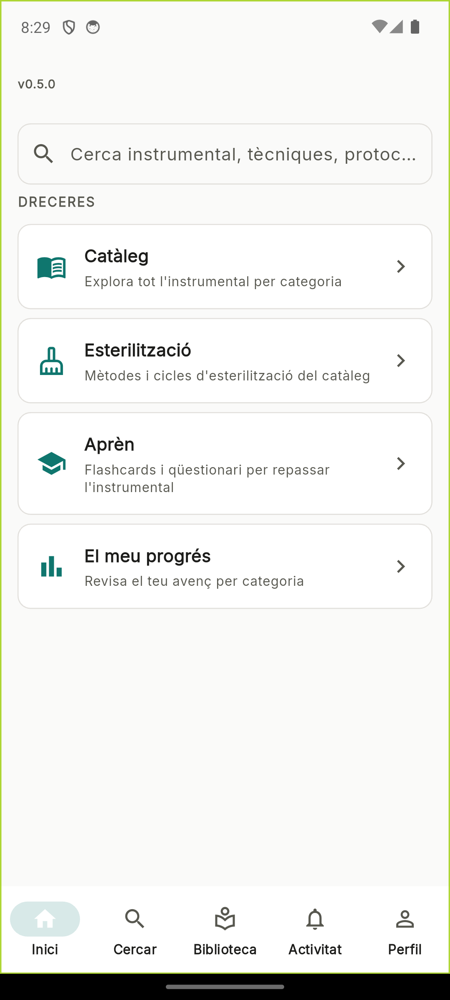
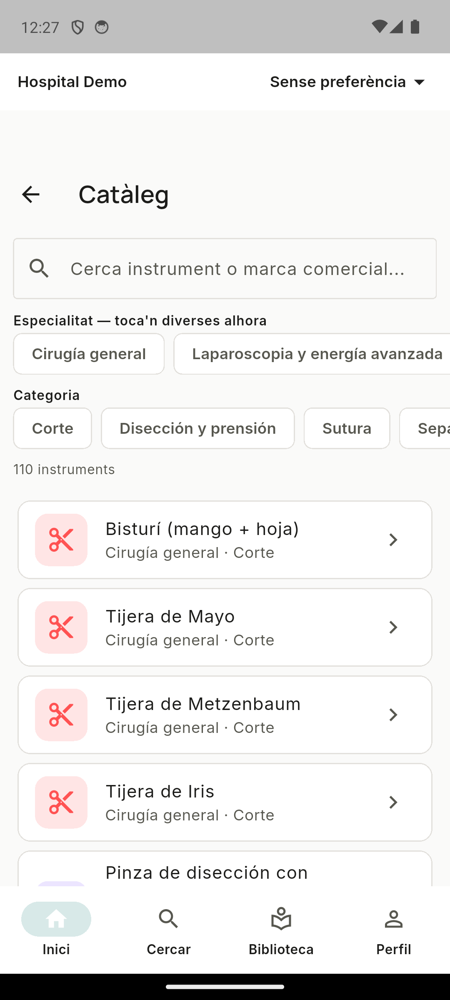
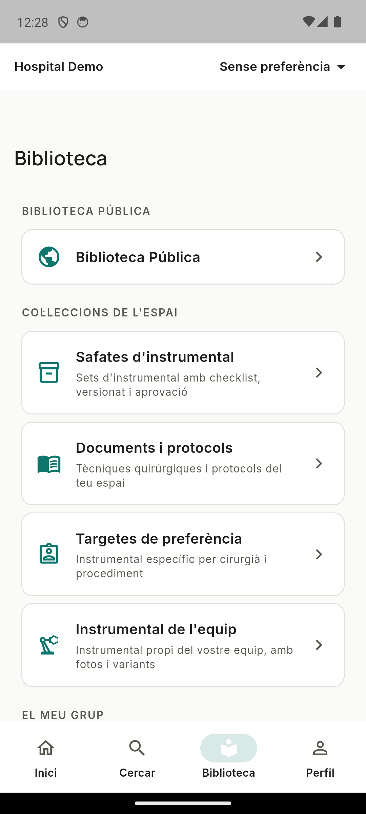
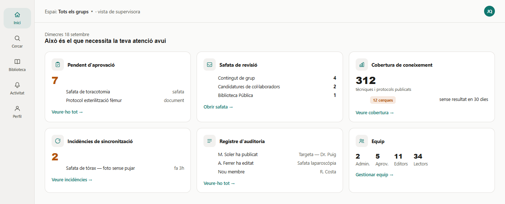
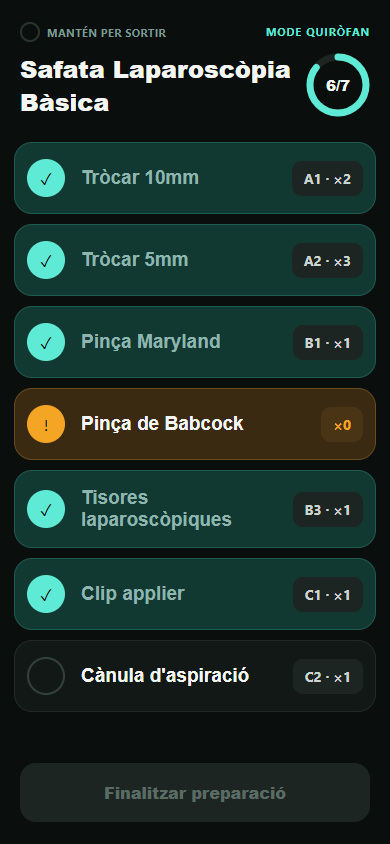

Instriq
InstriqColecistectomia laparoscòpica
v3 · publicat fa 4 dies
- ✓ Posicionament i camp estèril
- ✓ Creació del pneumoperitoneu
- ✓ Dissecció del triangle de Calot
- 4 Clipatge i secció del conducte cístic
Instriq reuneix instrumental, protocols i l'experiència real del bloc quirúrgic en un sol lloc — perquè aprendre a moure's al quiròfan no depengui d'una carpeta de paper desactualitzada.
Coneixement d'equip — instrumental, tècniques i protocols. No emmagatzema dades de pacients ni substitueix la història clínica.
Sense llicències. Sense quota de SaaS. Sense sorpreses a la factura — obert, sempre.
v3 · publicat fa 4 dies
Aesculap · Pinça hemostàtica
14 instruments · esterilitzada
Validada pel cirurgià
8 membres actius
Rols per espai:
Incorporar-se a un bloc quirúrgic exigeix adquirir molt coneixement pràctic en poc temps. Instriq existeix perquè qualsevol instrumentista, infermera, auxiliar o membre de l'equip quirúrgic trobi informació fiable i actualitzada, basada en l'experiència real d'altres professionals — i volem que sigui la plataforma de referència del bloc quirúrgic arreu del món.
Sense quota ni compte per al catàleg i l'aprenentatge bàsic.
Codi obert i decisions públiques, sempre.
Professionals sanitaris i desenvolupadors voluntaris, no una empresa tancada.
Dades i format oberts, preparats per interoperar amb altres sistemes si el projecte ho requereix.
Des del catàleg bàsic fins a la gestió completa del coneixement del teu grup. L'aprenentatge bàsic funciona com a convidat — només cal compte si el teu grup vol compartir el seu propi coneixement.



342 instruments organitzats per 17 especialitats i per categoria funcional, amb noms comercials i fabricant.
Flashcards i qüestionaris de repàs, amb progrés guardat al teu propi dispositiu.
Instrumental específic per cirurgià i procediment, compartit i validat dins del teu grup.
Documenta pas a pas com treballa el teu equip. Cada canvi passa per esborrany, revisió i publicació — res se sobreescriu, tot l'historial és consultable i restaurable.
Sets amb checklist de quantitats i fotos, versionades i aprovades, per verificar caixes completes després del rentat i l'esterilització.
Mètodes d'esterilització amb els seus paràmetres, més fabricant, IFU, manteniment i vida útil per a cada instrument.
Organitza el grup per especialitat o servei. Rols granulars (lector, editor, aprovador, administrador) per espai, amb auditoria de cada canvi sensible.
Consulta i edita sense xarxa a tot arreu on t'ho permetin els teus permisos; els canvis es pugen sols en recuperar la connexió.
Un únic cercador per instrumental, tècniques, protocols, fabricants, cirurgians i etiquetes — amb activitat recent i favorits.
Dona d'alta el material propi del teu equip, amb variants i fotos, privat i mai compartit fora del vostre espai.
Contingut obert a tota la comunitat, revisat i aprovat per un consell editorial — mai una autoritat clínica, sempre una referència de partida.
Registre de qui ha fet què i quan en accions sensibles. Exporta o elimina les teves dades personals quan vulguis (GDPR).
Dins del quiròfan, una checklist a pantalla completa pensada per tocar-la amb guants. Al despatx, un panell per a qui coordina el grup sencer — no la mateixa pantalla estreta, ampliada.


Des del primer dia fins avui, sense amagar res — inclòs el que encara està previst.
Instriq l'impulsa un petit equip inicial, però el seu creixement depèn d'una xarxa de professionals sanitaris, docents, investigadors i desenvolupadors que col·laboren de manera voluntària i sense ànim de lucre.
Comparteix l'instrumental i les tècniques del teu equip dins del teu grup, ajuda'ns a revisar contingut del catàleg, o digues quin protocol o guia et falta.
El codi és públic. Flutter (Android/iOS/Web) + Supabase. Comença pel README del repositori.
Instriq és gratuït i sense inversors, mantingut fora d'hores. Una donació ajuda a cobrir el cost del servidor i el temps dedicat al projecte.
Digues què trobes a faltar o vota les propostes d'altres persones. Sense compte, obert a tothom.
A Instriq, un grup (el teu hospital, bloc quirúrgic o equip) conté un o diversos espais de treball — normalment un per especialitat o servei. Dins de cada espai hi viuen les tècniques i protocols, les targetes de preferència, l'instrumental propi de l'equip i les safates.
Contingut dins de l'espai "Traumatologia"
Organitza els espais per especialitat o servei, no per cada tècnica individual. ✓ "Traumatologia", "Quiròfan 3". ✗ Un espai per cada protocol.
Instriq no dona per fet que ets un hospital gran. Un grup és qualsevol equip que vulgui documentar com treballa — des d'un consultori de tres persones fins a una xarxa hospitalària sencera. Comences petit i creixes sense canviar d'eina.
Comença amb 2-3 persones i un únic espai de treball. Sense mínims, sense complicar-te.
Un espai per la teva especialitat, amb les teves pròpies tècniques, targetes i safates.
Un grup, tants espais com facin falta, cadascun amb el seu contingut i els seus rols propis.
Documenta protocols d'aprenentatge i dona accés controlat a estudiants i personal en formació.
Comparteix fitxes tècniques i documentació oficial del teu catàleg amb qui l'utilitza cada dia.
Cada hospital amb el seu propi grup i les seves dades privades, amb la Biblioteca Pública com a punt de trobada comú.
El nom i la marca "Instriq" queden reservats per protegir la identitat del projecte i evitar usos que confonguin la comunitat — el codi en si és lliure sota AGPL-3.0.
Cap contracte et lliga a nosaltres: si mai el projecte s'atura, el codi és teu i el pots seguir executant tu mateix o encarregar-ho a qui vulguis.
Quan hi hagi prou activitat, publicarem aquí de forma agregada i anònima: l'instrumental més consultat, les especialitats amb més activitat i les guies que la comunitat més demana — mai dades individuals d'una persona o un grup concrets.
Instriq acaba de començar — encara no hi ha dades d'ús a mostrar. Sigues de les primeres persones a construir aquesta comunitat.
Ja pots fer una donació a través de GitHub Sponsors (secció Col·labora, més amunt) per ajudar a cobrir infraestructura i el temps dedicat al projecte.
Encara no hi ha un registre públic de com es reparteixen els fons. El publicarem quan hi hagi prou volum perquè tingui sentit.